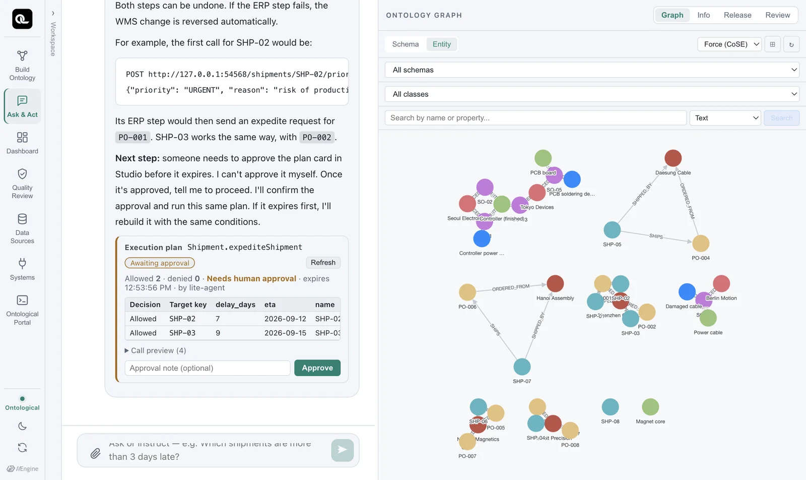
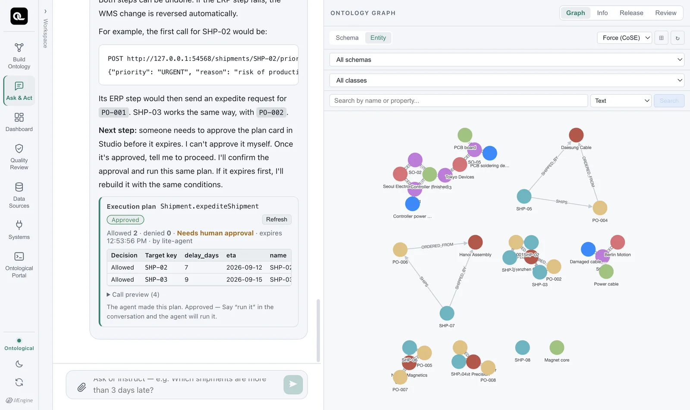
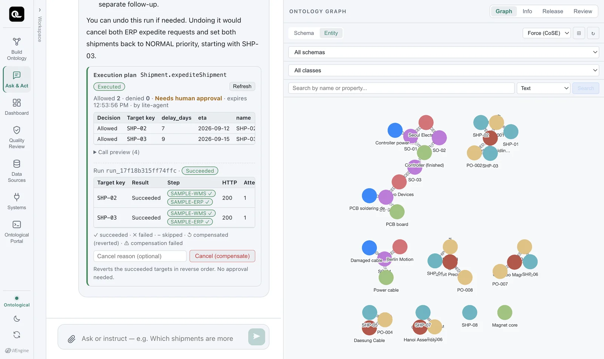
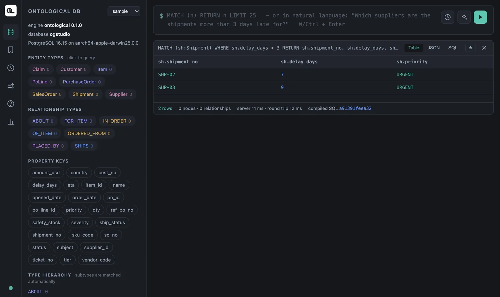
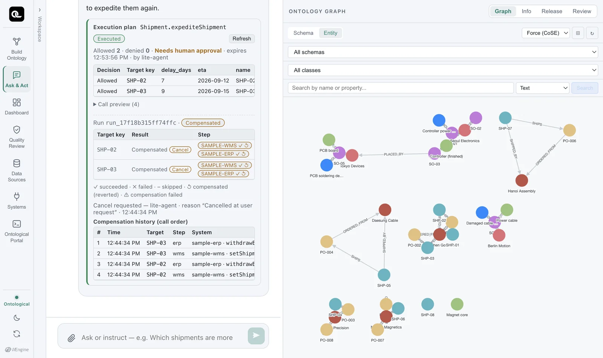

In the Ask & Act tab, you give a command to expedite two late shipments, check the result in the source database, and then cancel to restore the original state. This really changes data in the sample business systems.
Four steps#
command ──▶ ① plan ─────────▶ ② approve ──────▶ ③ execute ────────▶ (if needed) ④ cancel = reverse compensation
targets & policy by a person, API calls step undoes the successful
checked; nothing on the plan card by step (saga) steps in reverse
changed yet
The agent can make a plan and request execution, but it cannot approve. You approve on the plan card yourself.
① Plan — give the command#
Give the command in the Ask & Act tab. You can continue the conversation from Chapter 13, where you asked about late shipments.
Expedite the inbound shipments that are more than 3 days late (reason: risk of production disruption)
The agent picks the action Shipment.expediteShipment and asks the action executor for a plan (25–50 seconds in our tests).

What to look at on the plan card:
| Item | Meaning |
|---|---|
Shipment.expediteShipment · Awaiting approval |
Which action the plan is for, and its current state |
| Allowed 2 · denied 0 | The policy result for each target. Denied targets come with a reason (e.g. “Shipments already received are excluded”) |
| Needs human approval | This plan does not run without approval |
| Expires | You must approve and execute the plan within a set time. After that, plan again with the same conditions |
| Call preview (4) | Exactly which APIs will be called with which arguments (2 targets × 2 steps) |
Nothing has changed yet. A plan is a dry run.
② Approve#
Click Approve on the plan card. You can leave a note. The card then says “Approved — Say “run it” in the conversation and the agent will run it.” (Any instruction to run works, such as the one below.)

③ Execute#
Execute it
The agent executes the approved plan as is (it does not plan again). The executor runs the steps in order for each target, and checks the policy once more just before executing.

| Target | WMS priority | ERP expedite request | Result |
|---|---|---|---|
| SHP-02 | ✓ NORMAL → URGENT | ✓ PO-001 → S-CN-01, request sent | Succeeded |
| SHP-03 | ✓ NORMAL → URGENT | ✓ PO-002 → S-CN-01, request sent | Succeeded |
Did it really change? — check the source#
In the portal (graph sample), read the source WMS directly.
MATCH (sh:Shipment) WHERE sh.delay_days > 3
RETURN sh.shipment_no, sh.delay_days, sh.priority

The wms.shipment preview in the Data Sources tab shows the same thing. The business system changes the source data, and the data fabric reads the changed data.
④ Cancel — compensation in reverse order#
Cancel what you just did
The agent finds the execution record and requests compensation. The executor undoes the successful steps in reverse order — it withdraws the last thing it did (the ERP expedite request) first, and restores the first thing it did (the WMS priority) last.

| # | Target | Step | System · API | Result |
|---|---|---|---|---|
| 1 | SHP-03 | erp | sample-erp · withdrawExpediteRequest |
Compensated (200) |
| 2 | SHP-03 | wms | sample-wms · setShipmentPriority |
Compensated (200) |
| 3 | SHP-02 | erp | sample-erp · withdrawExpediteRequest |
Compensated (200) |
| 4 | SHP-02 | wms | sample-wms · setShipmentPriority |
Compensated (200) |
The targets are also handled in reverse order — SHP-03, processed last, is undone first.
If you check the portal again, both shipments have priority back at NORMAL. That is because the WMS priority compensation restores $before.priority — the value just before execution. If it had been HIGH, it would go back to HIGH.
Saga — when something fails midway#
What happens if you call several systems in turn and one of them fails partway? For example, if the WMS step for SHP-03 succeeds but the ERP step fails, you are left in a half-done state where only the WMS says URGENT.
The executor prevents this with the saga pattern. If a step fails for a target, it automatically compensates the steps that already succeeded for that target, in reverse order. Only that target goes back to its original state; the other targets stay successful, and the result is reported as “partial success”. The systems never end up disagreeing with each other.
| Situation | What the executor does |
|---|---|
| All steps succeed | Success |
| Step 2 fails for one target | Automatically compensates step 1 for that target → that target is back to its original state; the result is “partial success” |
| The same request is sent twice | Each target carries an idempotency key, so the business system does not process it twice |
| Data changes after planning | The policy is checked again just before execution, and targets that no longer match are skipped |
How to give good commands#
- Make the target condition clear: “more than 3 days late”, “Shenzhen Goldline PCB's open purchase orders”.
- Include a reason: if it is a required input, the agent asks for it. It is kept in the execution record and in the business system.
- Read the denial reasons on the plan card. They show why the policy blocked a target. If you want to change the policy, that is a build task (the action definition).
Exercises
- Give the command “Put all of Shenzhen Goldline PCB's open purchase orders on hold (reason: investigating the PCB soldering defect)”, and check on the plan card which purchase orders were allowed or denied, and why.
- Approve and execute, then check in the Data Sources tab that the status in
erp.purchase_orderchanged toON_HOLD, and see what was recorded in theerp.po_holdtable. - Cancel, and check that the status is back to
OPEN.
Show answers
- Allowed: PO-001, PO-002 (both OPEN). These are Shenzhen Goldline PCB's only purchase orders, so 0 are denied. (If you say “Put all suppliers' purchase orders on hold”, PO-003 and PO-004, which are CLOSED, are denied with the reason “Open purchase orders only”. If the agent already filters by
status = 'OPEN'when it picks the targets, the plan may have no denied rows, because those orders were never targets.) - PO-001 and PO-002 in
erp.purchase_orderareON_HOLD.erp.po_holdgets one row per purchase order with the reason, the status before the hold (prev_status = OPEN) and the requester.erp.po_holdis not a virtual node, so the table details in the Data Sources tab show only its columns — to see its contents, expose it as a virtual node (Chapter 6). - The compensation (
releasePurchaseOrder) restores the status from before the hold, so it becomesOPEN.